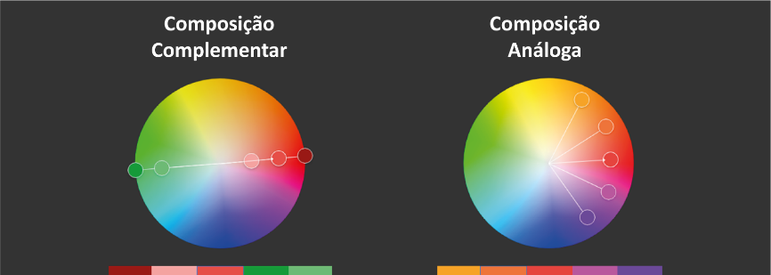

Todas as cores de uma paleta devem possuir harmonia e para isso se utiliza um sistema de harmonização de cores onde as composições, ou paletas podem ser: monocromática, complementar ou análoga. Na composição monocromática são utilizadas intensidades diferentes da mesma cor, podendo as intensidades mais claras representarem brilhos e intensidades mais escuras representarem sombras. Na composição análoga são utilizadas cores próximas com uma mesma intensidade e na composição complementar são utilizadas cores opostas, como, por exemplo, cores quentes com cores frias, a composição complementar possui mais contraste e a análoga menos, de forma que cores análogas são utilizadas em paletas num mesmo objeto como por exemplo, diferentes tonalidades de folhas num arbusto, e cores complementares são utilizadas em objetos destacados de seu entorno, como por exemplo, um pássaro colorido assentado sobre o arbusto.
Seletor de paletas da Adobe:
